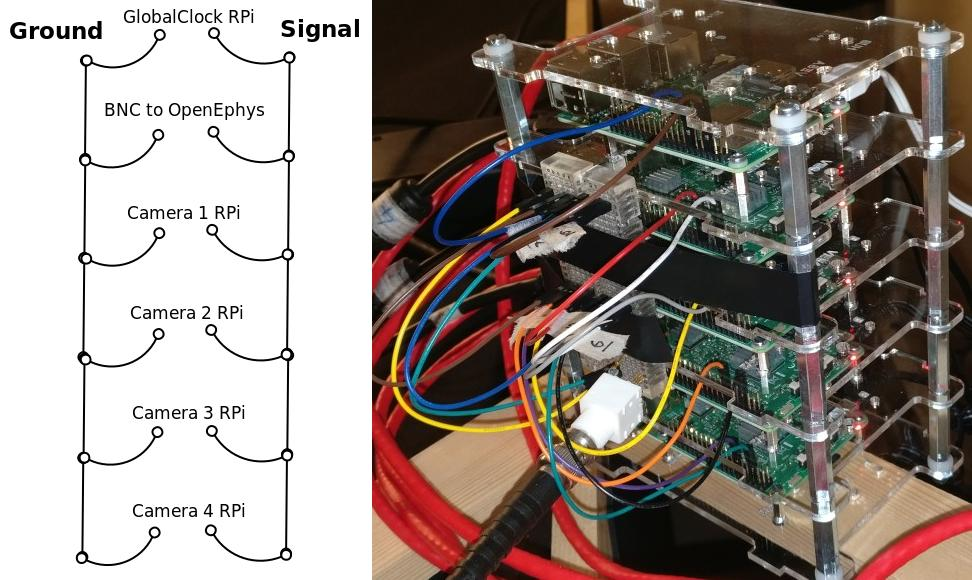

Camera and GlobalClock Raspberry Pi setup¶
The camera system is synchronised with the OpenEphys Acquisition board recording using regular TTL pulses from GlobalClock Raspberry Pi. This allows integrating any number of cameras into the system.
The final setup
- GlobalClock RPi
Connected to Recording PC over ethernet
Connected to send TTL pulses to OpenEphys Acquisition Board and all the Camera RPis.
- Camera RPis (as many as required)
Each with a camera
Connected to Recording PC over ethernet
Reading TTL pulses sent by GlobalClock RPi
The following procedures are identical for GlobalClock RPi and Camera RPis, unless specified otherwise.
Most efficient way to set up multiple RPis is to set up a single Camera RPi using the instructions below and then make copies of it’s SD card for other RPis using this guide: Making copies of Raspberry Pis.
This tutorial and related python modules are based on Raspberry Pi 4 Model B with Camera Module V2.
Hardware setup¶
Assembling Raspberry Pi Camera Module¶
Installing a Camera Module to GlobalClock RPi is not necessary.
The Raspberry Pi (RPi) Camera Module is usually bought and fitted separately to the RPi board. The camera can be used with HDMI cable extension sold on Pimoroni website. This allows the camera to be positioned distant from the RPi and the angle manipulated more comfortably. Instructions for its assembly should be available from the provider.
Regardless of whether the HDMI cable extension is used or not, the flat camera cable will need to be assembled to the RPi board, as per manufacturers guidelines. Attach the flat cable to the interface right next to the HDMI output. Make sure the metal contacts on the cable touch the metal contact on the RPi interface. Push down on the clip on the interface to mechanically secure the connection.
Wiring for GlobalClock TTL pulses¶
Standard GPIO suitable breadboard jumper wires and a breaboard can be used to conveniently connect Camera and GlobalClock Raspberry Pis and a BNC connector for OpenEphys into a single circuit for synchronization with the GlobalClock TTL pulses.
BCM pin 18 must be used for signal channel on all devices, as it is hardcoded in the Python scripts. This is especially important for the GlobalClock RPi, which can only used a limited selection of RPi pins for producing its very regular signal. See https://pinout.xyz/ for information on which pin is the BCM 18 pin on your Raspberry Pi.
Any ground pin on RPi can be used for the ground in this circuit.
See below for wiring diagram as well as an image of actual setup with GlobalClock RPi and 4 Camera RPis. Any number of Camera RPis can be added to the circuit.
Software setup¶
Installing Raspberry Pi OS: Raspbian¶
Download Raspbian Buster Lite from Raspberry website. Unpack the downloaded .zip file with Archive Manager to get access to the .img file.
Download Etcher from this website. Unpack the downloaded .zip and run (double-click) the Etcher .AppImage. Select the Raspbian .img file and your inserted microSD card. Write the image (Flash button).
Insert the microSD card into Raspberry Pi.
Connect keyboard and monitor to Raspbery Pi.
Connect Raspberry Pi to the internet¶
It is not important how the RPi is connected to the internet, but below is are two options.
Use internet connection through Recording PC¶
Networking can be set up such that the Raspberry Pis have access to the internet through Recording PC. For this, make sure to follow these guides:
If you follow these steps, then you will already be setting up networking exactly as is described in this guide and will be able to skip these steps after installing the software on the Raspberry Pi.
Use network connection instead of Recording PC¶
This tutorial instructs you to connect the RPi to the internet using the same network connection as is used for your recording PC, if you used the following method to set it up: Connect to the local network. This means you will not be able to use the Recording PC to access the internet, while you work through the part “Install necessary libraries on Raspberry Pi”. If you can use another means of achieving network connection on the RPi, you can ignore steps in this part relating to interfaces file. Otherwise, connect the RPi to the network with the same ethernet cable as you were so far using on the Recording PC.
Add /etc/network/interfaces (as set up on the Recording PC in this guide: Connect to the local network) to the RPi Home folder (/home/pi/) with a USB stick. This can also be done by copying the file onto the RPi SDcard whilst it is plugged into the Recording PC (you’ll find /home/pi on the rootfs partition).
You may need to edit the interfaces file in your RPi home folder. Run the terminal command ifconfig on the RPi and make a note of the first device on the list. Devices are aligned to the left column. This is likely eth0. Replace the device name enp2s0 in the interfaces file with the device you saw in ifconfig output. You can nano to do this with the following command nano /home/pi/interfaces. To close nano after making the changes, hit Ctrl + X, type Y and press Enter.
Apply the newly created interfaces file in the Raspberry Pi with terminal commands:
sudo mv /etc/network/interfaces /etc/network/interfaces_old # Makes a copy of the original version
sudo mv ~/interfaces /etc/network/interfaces # Replaces the previous interfaces file
Reboot the Raspberry Pi for network changes to take effect.
Enable camera module¶
Camera needs to be enabled in RPi settings. You can do this by accessing RPi settings via terminal command sudo raspi-config and choosing Interfacing Options with arrow keys and pressing Enter. Select Camera option and choose to Enable it. Reboot the RPi.
Install software¶
While GlobalClock RPi does not require most of the software installations required for Camera RPi, it is easiest to set up Camera RPi and then just make a copy of the SD card for the GlobalClock RPi.
Most of the steps in this installation are to do with installing OpenCV and based on this tutorial, with the important exception of calling the virtual environment python3 as this is hardcoded in the Python scripts.
For the following steps to work RPi must be connected to the internet.
Update existing software¶
sudo apt-get update
sudo apt-get upgrade -y
sudo apt-get dist-upgrade -y
Install dependencies¶
sudo apt-get install -y build-essential cmake pkg-config
sudo apt-get install -y libjpeg-dev libtiff5-dev libjasper-dev libpng-dev
sudo apt-get install -y libavcodec-dev libavformat-dev libswscale-dev libv4l-dev
sudo apt-get install -y libxvidcore-dev libx264-dev
sudo apt-get install -y libfontconfig1-dev libcairo2-dev
sudo apt-get install -y libgdk-pixbuf2.0-dev libpango1.0-dev
sudo apt-get install -y libgtk2.0-dev libgtk-3-dev
sudo apt-get install -y libatlas-base-dev gfortran
sudo apt-get install -y libhdf5-dev libhdf5-serial-dev libhdf5-103
sudo apt-get install -y libqtgui4 libqtwebkit4 libqt4-test python3-pyqt5
sudo apt-get install -y python3-dev
sudo apt-get install pigpio
sudo systemctl enable pigpiod # Ensures pigpio is started each time with RPi
Create Python 3 virtual environment¶
wget https://bootstrap.pypa.io/get-pip.py
sudo python3 get-pip.py
sudo rm -rf ~/.cache/pip
sudo pip3 install virtualenv virtualenvwrapper
Once both virtualenv and virtualenvwrapper have been installed, open up your ~/.bashrc with nano ~/.bashrc and append the following files to the bottom of the file:
# virtualenv and virtualenvwrapper
export WORKON_HOME=$HOME/.virtualenvs
export VIRTUALENVWRAPPER_PYTHON=/usr/bin/python3
source /usr/local/bin/virtualenvwrapper.sh
source /home/pi/.virtualenvs/python3/bin/activate
To activate the changes, either reboot the Pi or run command source ~/.bashrc.
Finally, create a Python 3 virtual environment called python3 with the following command:
mkvirtualenv python3 -p python3
Verify Python 3 virtual environment¶
To verify that installation is working as intended, test if the following command activates the python3 environment:
source /home/pi/.virtualenvs/python3/bin/activate
This is crucial as the Python scripts are hardcoded to use this command to enter the environment.
You are already in the python3 environment, if your terminal window prompt is (python3) pi@raspberrypi. If it is just pi@raspberrypi, then you are not in the environment. If you are already in the python3 environment, exit using the deactivate command, so you can verify that you are able to activate the environment using the above source command.
Install packages in Python 3 virtual environment¶
For here on, all actions on the RPi should be taken while in python3 virtual environment.
Install python packages (some of these commands can take a long time):
pip install numpy
pip install picamera
pip install psutil
pip install scipy
pip install ipython
pip install pyzmq
pip install Pillow
pip install pigpio
Compile and install OpenCV from source¶
Ensure you are in python3 virtual environment.
Increasing SWAP¶
To install OpenCV, it is recommended to increase swap space, if you have less than 3 GB of memory. If you are using a Raspberry Pi version with 3 GB of memory or more, then you should skip this step. With low memory, increasing SWAP space will enable you to compile OpenCV with all four cores of the Raspberry Pi without the compile hanging due to memory exhausting. Alternatively avoid using -j4 flag in the make command for OpenCV.
Open up your /etc/dphys-swapfile file and then edit the CONF_SWAPSIZE variable to 1024. You can do this with command sudo nano /etc/dphys-swapfile. Now make sure to restart the swap service:
sudo /etc/init.d/dphys-swapfile stop
sudo /etc/init.d/dphys-swapfile start
Installing OpenCV¶
Then run the following commands to download and prepare OpenCV version 4.1.1:
cd ~
wget -O opencv.zip https://github.com/opencv/opencv/archive/4.1.1.zip
wget -O opencv_contrib.zip https://github.com/opencv/opencv_contrib/archive/4.1.1.zip
unzip opencv.zip
unzip opencv_contrib.zip
mv opencv-4.1.1 opencv
mv opencv_contrib-4.1.1 opencv_contrib
cd ~
The following commands will compile and install the downloaded OpenCV with optimisations to Raspberry Pi. Note, these commands require internet access as part of the build process.
cd ~/opencv
mkdir build
cd build
cmake -D CMAKE_BUILD_TYPE=RELEASE \
-D CMAKE_INSTALL_PREFIX=/usr/local \
-D OPENCV_EXTRA_MODULES_PATH=~/opencv_contrib/modules \
-D ENABLE_NEON=ON \
-D ENABLE_VFPV3=ON \
-D BUILD_TESTS=OFF \
-D INSTALL_PYTHON_EXAMPLES=OFF \
-D OPENCV_ENABLE_NONFREE=ON \
-D CMAKE_SHARED_LINKER_FLAGS=-latomic \
-D BUILD_EXAMPLES=OFF ..
make -j4
sudo make install
sudo ldconfig
cd /usr/local/lib/python3.7/site-packages/cv2/python-3.7
sudo mv cv2.cpython-37m-arm-linux-gnueabihf.so cv2.so
cd ~/.virtualenvs/python3/lib/python3.7/site-packages/
ln -s /usr/local/lib/python3.7/site-packages/cv2/python-3.7/cv2.so cv2.so
cd ~
To test if OpenCV is working, open python interpreter and check if the output of the following commands is ‘4.1.1’:
import cv2
print(cv2.__version__)
Decreasing SWAP¶
If you followed the steps earlier to increase SWAP, make sure to revert changes to /etc/dphys-swapfile by setting CONF_SWAPSIZE back to 100. This will return SWAP settings back to normal.
Setting up Raspberry Pi networking with recording PC¶
This part describes setting up networking between the recording PC and one or multiple Raspberry Pis. This setup is based on having two network adapters on the Recording PC. One of them connected to the internet, as in this guide: Connect to the local network. The other can be a USB network adapter or a PCIe card that is then connected to the RPi or to a network switch that has multiple RPis connected to it. (Ubuntu should recognise and automatically install any necessary drivers for a network adapter. This can be verified if a new device shows up in ifconfig) When connecting multiple RPis, the setup is identical, only that each RPi has a different static IP address assigned (see below on how to change dhcpcd.conf).
Choosing correct IP addresses¶
For the devices to see each other, the static IP addresses of the devices in the internal network must all have the same values, apart from the last digits after the last separator, e.g. 192.168.0.1 and 192.168.0.22.
These first unchanged parts of the IP addresses should not match those of the external network as set up in the guide Connect to the local network. We chose the 192.168.0.xx address as it did not match the external network IP and made it easiest to work with a WiFi router for Wireless internal network.
Configuring Raspberry Pi connectivity to Recording PC¶
Enable SSH¶
SSH needs to be enabled. You can do this by accessing RPi settings via terminal command sudo raspi-config and choosing Interfacing Options with arrow keys and pressing Enter. Select SSH option and choose to Enable it. Reboot Raspberry Pi.
Revert any changes made to default network settings¶
To install the software, it was necessary to obtain internet connection. Whatever method was used, make sure to revert all related changes. If you used the suggested changes to the interfaces file, then restore the original interfaces file with the following commands
sudo rm /etc/network/interfaces
sudo mv /etc/network/interfaces_old /etc/network/interfaces
Set up static IP address with Recording PC¶
To set up a static IP address, you will need to edit the dhcpcd.conf. You can do this with the following terminal command sudo leafpad /etc/dhcpcd.conf. Add the following lines to the end of this file and Save it.
# Static IP for connection to Recording PC
interface eth0
static ip_address=192.168.0.20
static routers=192.168.0.10
static domain_name_servers=144.82.250.1 193.160.250.1
Here again the interface variable is set to eth0. This is likely the primary ethernet adapter identity on your RPi, but you can check this using the ifconfig terminal command. The first value on the left column should be used as the interface value in dhcpcd.conf.
Note that if you have multiple RPis connected to the Recording PC through a switch, they should have different static ip_address values in the dhcpcd.conf. These could be for example 192.168.0.20 and 192.168.0.21. We used the IP values 20 and up for tracking RPis 1, 2, 3 etc.
With this setup the SSH login may be slow. This can be fixed by editing the sshd_config file. Open it with terminal command sudo nano /etc/ssh/sshd_config and add the following line to the very end:
UseDNS no
Now after you restart the RPi, it should be ready for connecting to the Recording PC and to be used with the Recording Manager.
Set up internet access via Recording PC¶
Raspberry Pis can also be given access to the internet, if the Recording PC networking is configured correctly, based on the guide Configuring the Recording PC networking with Raspberry Pis. The two key things for this to work are the following:
The
static routersaddress given to RPi matches theaddressgiven to Recording PC network interface that is connected to the local Raspberry Pi network.The
static domain_name_serversgiven to RPi matches thedns-nameserverson the Recording PC.
Configuring the Recording PC networking with Raspberry Pis¶
These instructions are based on this blog post and this StackExchange answer.
Create an internal network with Raspberry Pis¶
Changes need to be made to the interfaces file. Open this using terminal command sudo gedit /etc/network/interfaces. Add the following lines to the end of the file:
# Network adapter interfacing with RPis
auto enx00249b233bda
iface enx00249b233bda inet static
address 192.168.0.10
netmask 255.255.255.0
So that the full interfaces file should now look like this:
# Static IP for internet connection
auto lo
iface lo inet loopback
auto enp0s31f6
iface enp0s31f6 inet static
address 128.40.57.144
netmask 255.255.255.0
gateway 128.40.50.245
dns-nameservers 144.82.250.1 193.160.250.1
# Network adapter interfacing with RPis
auto enx00249b233bda
iface enx00249b233bda inet static
address 192.168.0.10
netmask 255.255.255.0
Note that the word enx00249b233bda needs to be replaced by the identity of the network adapter that is connected to the RPis. You can find the identiy with the terminal command ifconfig and checking which adapter identiy (left column) appears and disappears as you change as you connect and disconnect the network adapter from the PC. It is most likely the second on the list.
Now after you restart the Recording PC you should be able to connect to the RPi using the terminal command ssh pi@192.168.0.20 or whatever was your chosen static IP address for the RPi. The first time you do this to any new Raspberry Pi, it may say The authenticity of host ‘192.168.0.20 (192.168.0.20)’ can’t be established. -//- Are you sure you want to continue connecting (yes/no)?* Type yes and hit Enter. The default password for the RPi is raspberry.
Sharing internet connection from Recording PC to internal Raspberry Pi network¶
The following commands will set up IP masquerading and IP forwarding:
iptables -w -t nat -A POSTROUTING -s 192.168.0.0/24 -o enp0s31f6 -j MASQUERADE
iptables -w -t filter -A FORWARD -m conntrack --ctstate ESTABLISHED,RELATED -j ACCEPT
iptables -w -t filter -A FORWARD -i enx00249b233bda -j ACCEPT
To ensure these changes are persistent when the Recording PC is restarted, install iptables-persistent with command sudo apt-get install iptables-persistent. During initialisation you should be able to choose to save current settings, choose YES (assuming you have just set iptables settings with the commands above and have not restarted since).
All of the above will be completely ineffective until you activate the IPv4 routing master switch. First, make sure that /etc/sysctl.conf file has the following line and it is not commented out:
net.ipv4.ip_forward=1
After making changes to /etc/sysctl.conf restart the Recording PC for changes to take effect.
It is recommended to not have Raspberry Pis accessible to the internet as they are not particularly well prodected devices. If you don’t need internet access on the Raspberry Pis (e.g. after installing the software), then you can turn this feature off by setting the net.ipv4.ip_forward to 0 in the /etc/sysctl.conf file as you just edited it. Make sure to reboot the Recording PC again, after such changes.
Configure SSH keys to avoid Password requests¶
This is necessary for the Recording Manager to successfully interact with the RPi. The following steps are based on this guide.
Generate an SSH key on Recording PC with terminal command ssh-keygen -t rsa -C recpc@pi. Use the default location to save the key by pressing Enter. Leave the passphrase empty by pressing Enter.
Open terminal on Recording PC and enter the connect to your RPi using SSH with command ssh pi@192.168.0.20 and enter raspberry as password. Enter this command in the terminal where you opened the SSH connection install -d -m 700 ~/.ssh.
Now exit the SSH session or open a new terminal on Recording PC and enter this command cat ~/.ssh/id_rsa.pub | ssh pi@192.168.0.20 'cat >> .ssh/authorized_keys'. Use the correct IP address (the numbers: 192.168.0.20) in that command for the IP address of the RPi you are connecting to. Enter the password raspberry for your RPi.
Now your RPi should be able to connect to the RPi via SSH without a password.
Making copies of Raspberry Pis¶
Once one Raspberry Pi has been set up and configured based on the instructions above, it is best to set the others up as simple copies of the first one. To do this, you can use linux built in method to make a virtual copy of the SD drive on your Recording PC or other computer that has SD card reader and then rewrite it onto a new SD card using Etcher as during the initial installation of Raspbian. You will only need to make one change separately for each RPi.
Insert your SD card and find out its identifier in Ubuntu using the terminal command sudo fdisk -l. If you are unsure of which device name (something like /dev/mmcblk0) is your RPi SD card, you can check be removing and re-inserting to establish which drive/card appears and disapperas. Drive/card identifiers can have endings indicating paritions, in this case you may have /dev/mmcblk0p0 and /dev/mmcblk0p1. When using the drive identifier in the commands, leave out the p0 or p1 ending, as you want to copy all partitions on the card.
Before you continue, make sure you have unmounted all partitions of the SD card. Using your correct drive identifier, use the following terminal commands:
sudo umount /dev/mmcblk0p0
sudo umount /dev/mmcblk0p1
sudo umount /dev/mmcblk0
Ensure that your PC has as much free space as your SD cards total capacity, then use the following terminal command to make a virtual copy of the card, where you need to use the correct drive identifier:
sudo dd if=/dev/mmcblk0 of=~/RPi-SDcard-Copy.img status=progress
This should put the virtual copy to your home folder and name it RPi-SDcard-Copy.img. If you wish to save it elsewhere, you can specify the full path including the file name, instead of the ~/RPi-SDcard-Copy.img in the above command.
Now remove the original RPi SD card from the computer and replace it with a new one. You can now proceed to write the newly made copy of the original SD card onto the new SD card using Etcher, as you did at this part of the guide: Installing Raspberry Pi OS: Raspbian. You just need to choose the newly created RPi-SDcard-Copy.img to write instead of the Raspbian OS .img file you used when installing Raspbian originally.
Once the writing is done, you need to access the newly created SD card. You may need to re-insert it to remount it (Always use eject option if possible, before removing SD cards). You need to edit the /etc/dhcpcd.conf file on the SD card. Navigate to the SD card directory, go to etc folder. Open terminal in that folder by right clicking into the folder and choosing Open in Terminal. Use this command to open the file in text editor `` sudo gedit dhcpcd.conf``. You need to change one of the lines you added to the dhcpcd.conf file originally when setting up networking for the RPi. Find the line that says static ip_address=192.168.0.20/24. Edit the IP address to what the address you wish the RPi with this SD card would have, e.g. static ip_address=192.168.0.21/24. Save the text file.
You can now remove the SD card (safely with after ejecting in Ubuntu) and simply plug it into a new Raspberry Pi. It should work perfectly as the one before, only you will need to use the newly set IP address to connect to it. Make sure you test if the SSH connection can be established, with terminal command from Recording PC ssh pi@192.168.0.21. At first time of running, it may say The authenticity of host ‘192.168.0.21 (192.168.0.21)’ can’t be established. -//- Are you sure you want to continue connecting (yes/no)?* Type yes and hit Enter.